-----------------------------------------------------------------------------------------------------
01
Create a simple sin wave.
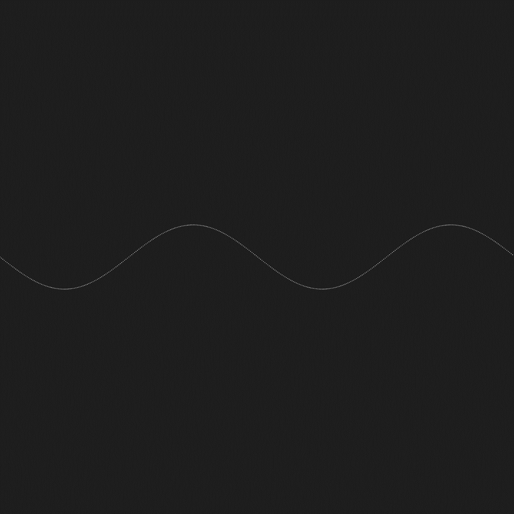02
Create circle with a sin radius.
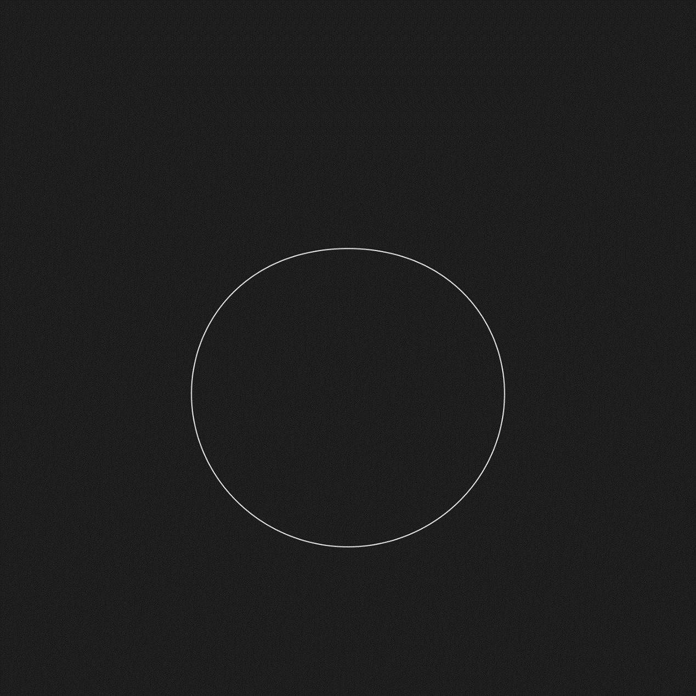 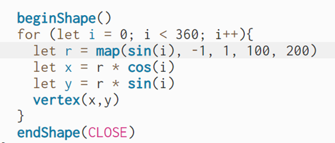03
Add another radius.
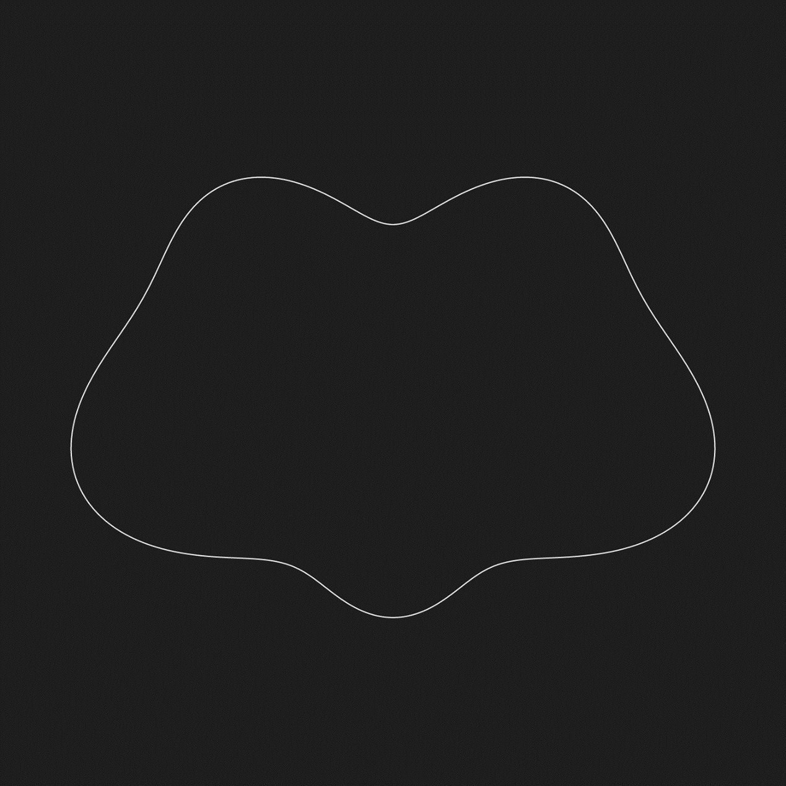 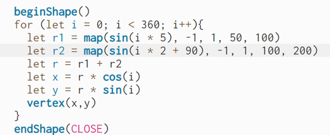04
Make an animation.
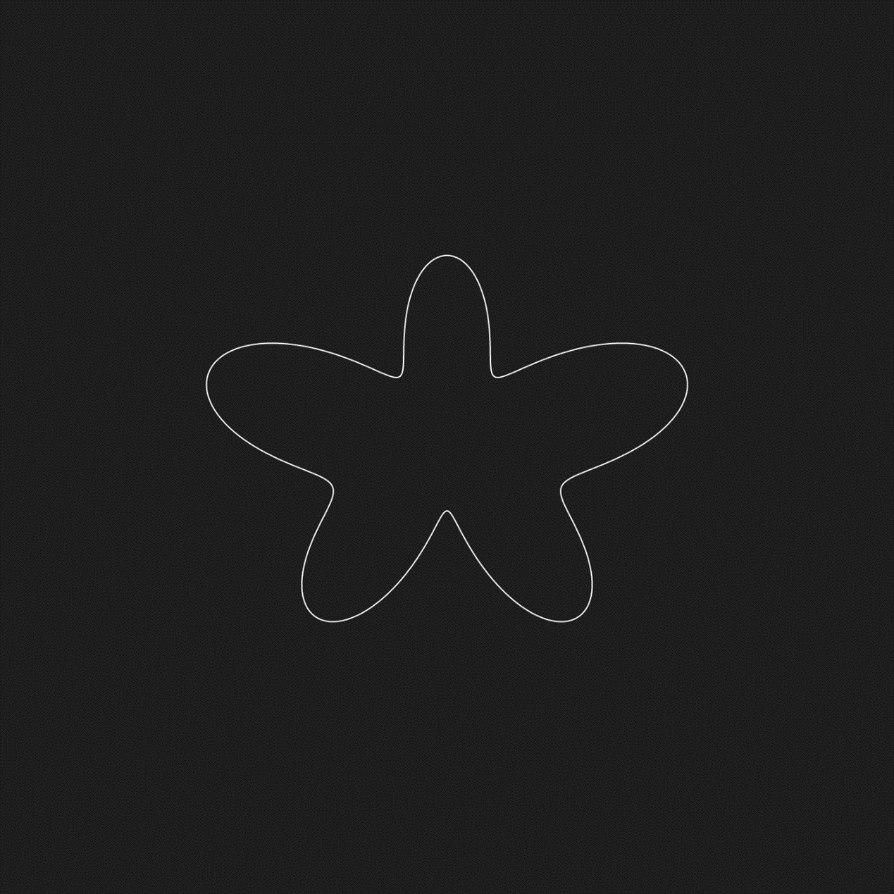 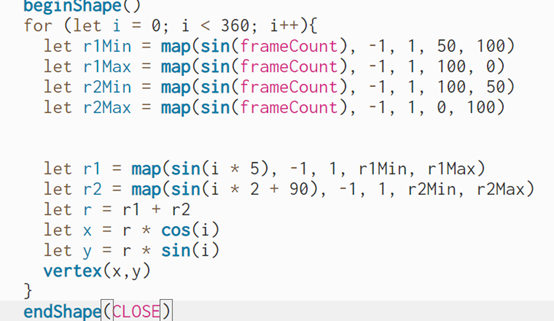05
Make it more organic.
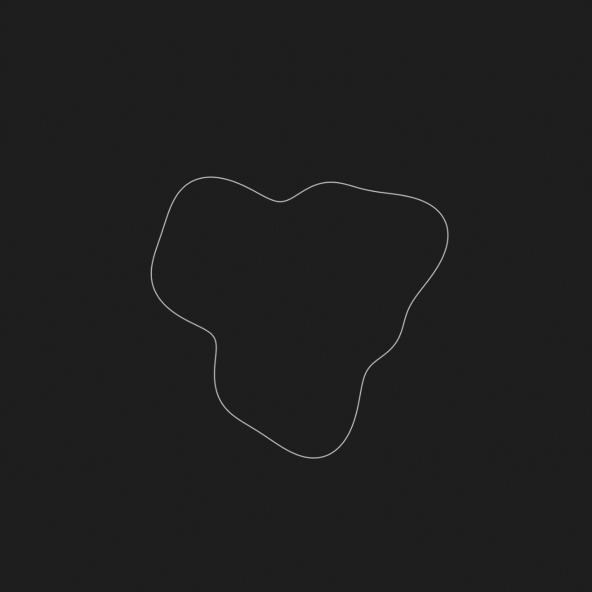 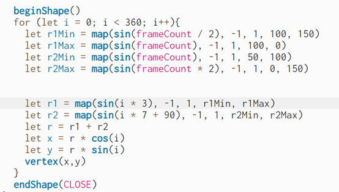06
Add some lines.
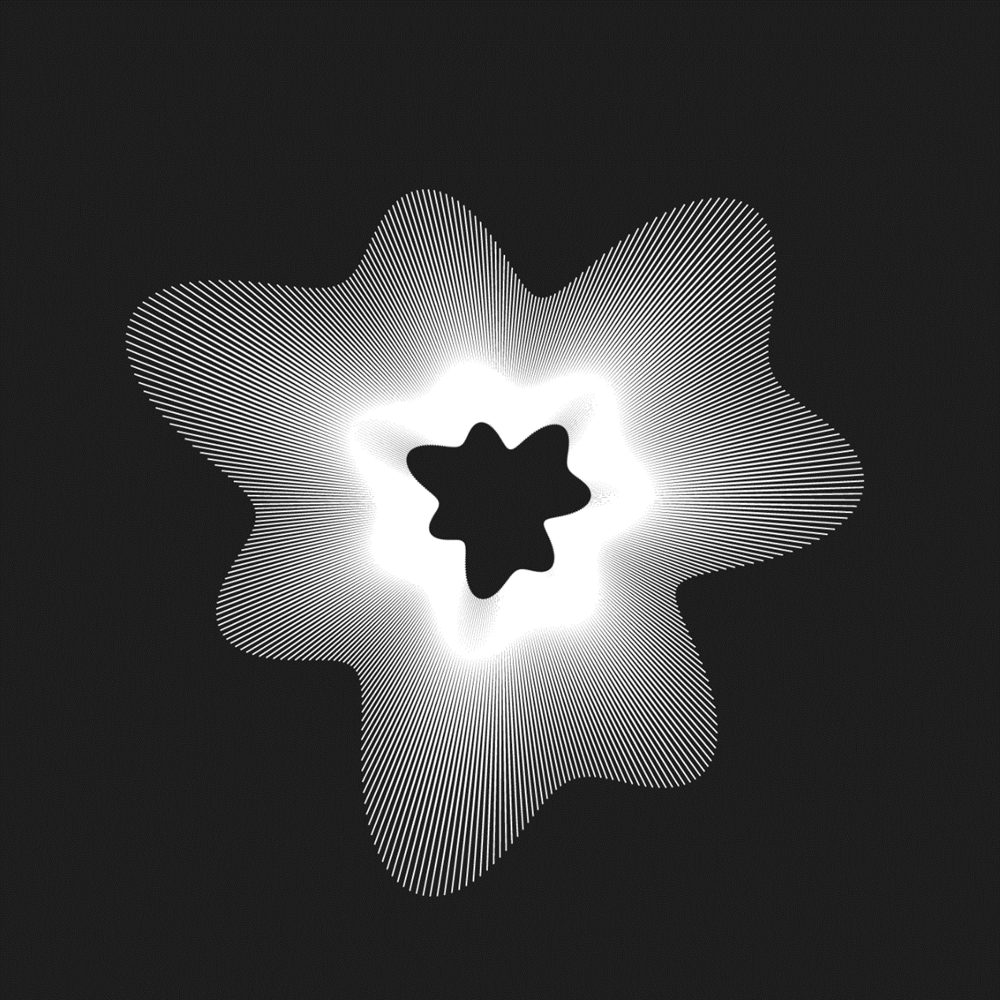07
Add another shape that move with specific time interval.
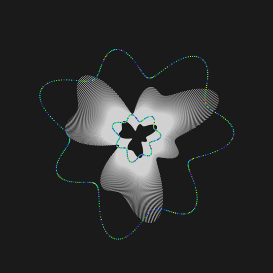